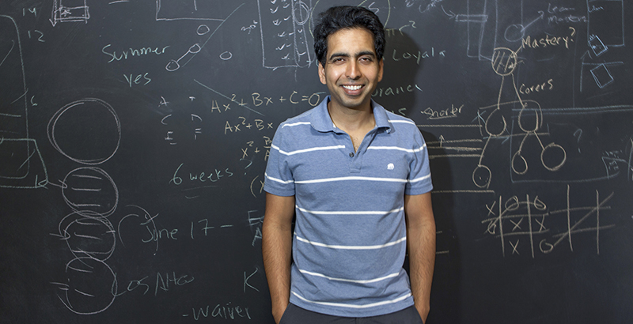

Sal Kahn

Salman "Sal" Khan from The 74 Interview
Note: The following four paragraphs are sourced from Wikipedia.
Salman "Sal" Khan (born October 11, 1976) is a Bangladeshi-Indian-American educator
and the founder of Khan Academy, a free online education platform and an organization
with which he has produced over 6,500 video lessons teaching a wide spectrum of academic
subjects, originally focusing on mathematics and sciences. He is also the founder of
Khan Lab School, a brick-and-mortar school associated with Khan Academy.
As of February 2021, the Khan Academy channel on YouTube has 6.4 million subscribers
and Khan Academy videos have been viewed more than 1.7 billion times. In 2012, Time
named Khan in its annual list of the 100 most influential people in the world. In the same
year, Forbes magazine featured Khan on its cover, with the story "$1 Trillion Opportunity".
Salman Khan was born in Metairie, Louisiana, to a Bengali family.
His father was from Barisal, Bangladesh (formerly East Pakistan)
and his mother was from Murshidabad, India. He attended Grace King
High School, where, as he recalls, "a few classmates were fresh out of jail
and others were bound for top universities." He also worked as a cartoonist
for the high school's newspaper. Khan took upper-level mathematics courses
at the University of New Orleans while he was in high school and graduated
valedictorian in 1994.
Khan attended the Massachusetts Institute of Technology (MIT), graduating with
Bachelor of Science and Master of Science degrees in Course 6
(electrical engineering and computer science), and another bachelor's degree in Course 18
(mathematics), in 1998. He was class president in his senior year. Khan also holds a
Master of Business Administration (MBA) from Harvard Business School.
I chose to make this website for Sal Khan because he's helped me and millions of others
get through school. I also fondly remember starting to learn calculus before I took it in
college, which helped me start off the semester strong and do well in the course. His
work has helped me in high school as well to supplement my learning. Although I can't say I
use KhanAcademy too much now, I have wonderful memories of it, and so I decided to make this
tribute towards Khan.